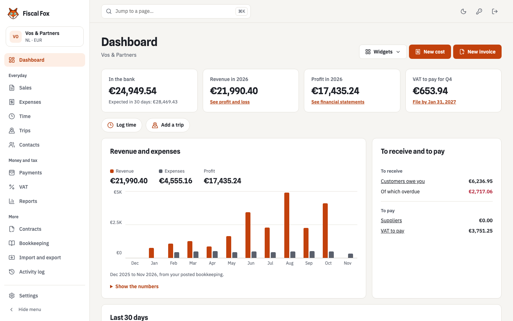
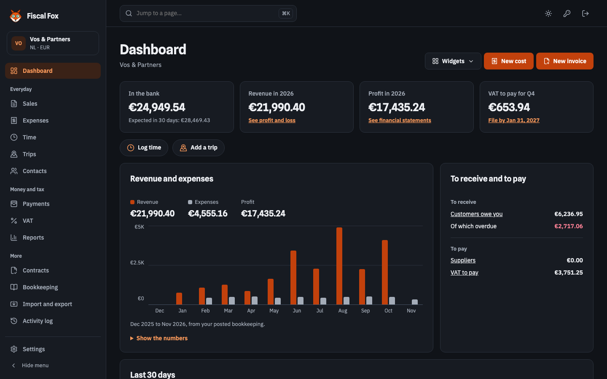

Dashboard
The dashboard is the first screen after signing in. It summarizes how the business is doing and links to the work that is waiting for you.

Widgets
| Widget | What it shows |
|---|---|
| Key numbers | Money in the bank (and expected in 30 days), revenue and profit this year, and the VAT to pay for the current quarter with its filing deadline. |
| Quick actions | Shortcuts such as Log time and Add a trip. |
| Revenue and expenses | Monthly bars for the last 12 months with totals. Show the numbers opens the same data as a table. |
| To receive and to pay | What customers owe you (and how much is overdue), what you owe suppliers, and VAT to pay. |
| Last 30 days | Recent invoices, costs, hours, and trips. |
| To do | Work waiting for you, such as expenses that still need a receipt. |
| Recent activity | The latest eight changes. Visible to owners, admins, and accountants; See all activity opens the Activity log. |
| Company profile | Your organization details with a link to Settings. Hidden by default. |
The figures come from posted bookkeeping: finalized invoices and approved expenses. Drafts do not count yet.
Choose what to show
- Select Widgets at the top right.
- Tick or untick widgets under Show on your dashboard.
- Reset to default restores the standard set.
The choice is saved per organization in this browser.
Shortcuts
New cost opens Expenses and New invoice opens Sales. Most numbers on the dashboard link to the report or list behind them.
